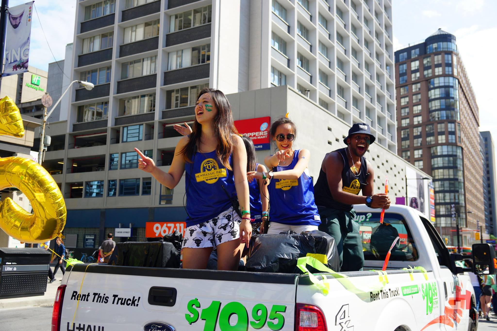
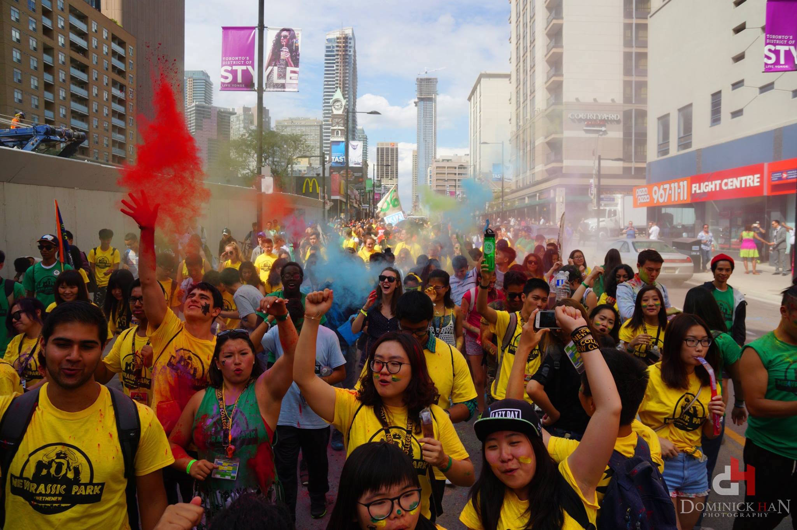
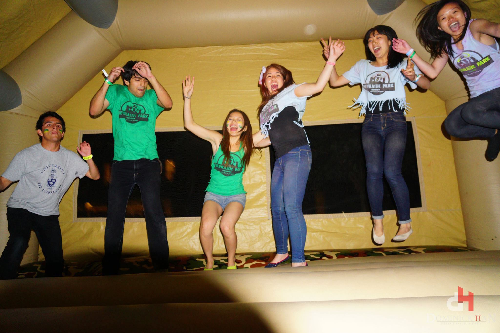

- 
- 
- 
The 5 'W's of Orientation
Who?
It’s for you! The new incoming students of New College!
What?
A week of fun activities and informative sessions with upper year leaders and students' services
Where?
At your new home away from home: New College!
When?
Sept. 4 - Sept. 8, 2017
Thursday & Friday will feature drop in programs while classes begin
Why?
To integrate you into our community and help you with the transition to university life
What to Expect During the Week
- Opportunities to meet fellow incoming students as well as upper-years, who will become your mentors for years to come
- Explore downtown Toronto on a city sightseeing bus
- Attend our annual semi-formal at the landmark Royal Ontario Museum and visit the exhibits!
- Gain excellent resources that will help you reach your highest potential this academic year
- Explore the expansive variety of clubs that New College and the University of Toronto has to offer. We hope you find a club that interests you! It’s a great way to make friends and be involved in something you are passionate about